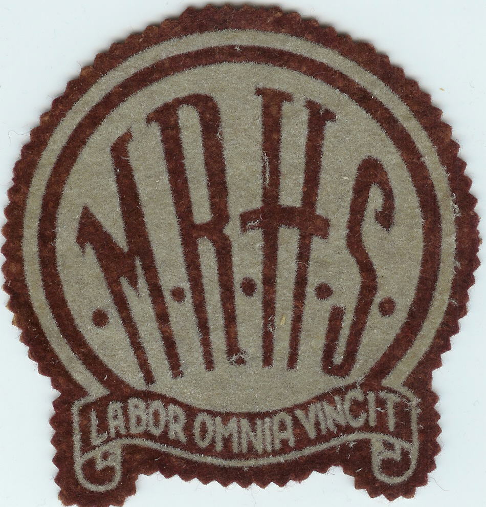
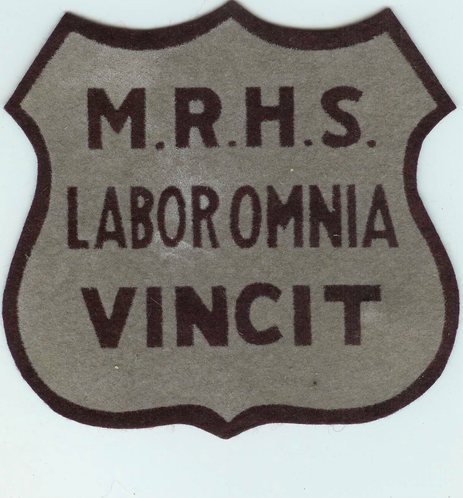
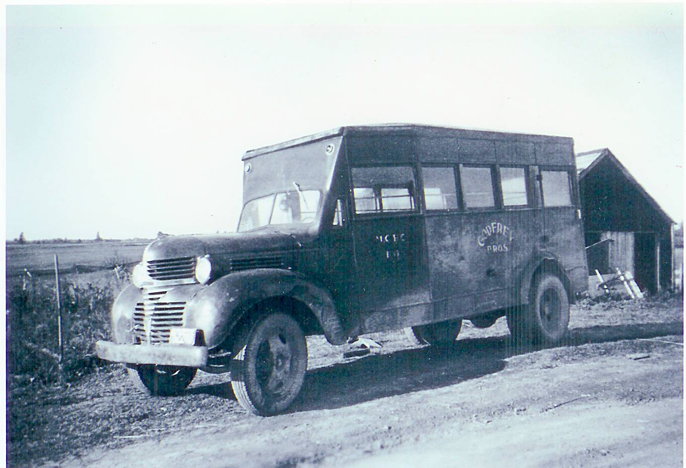
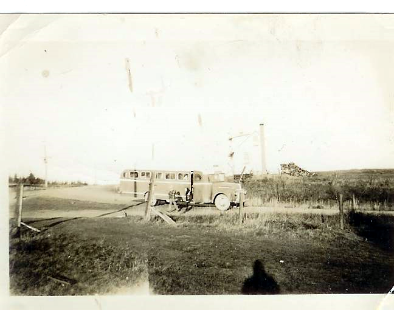
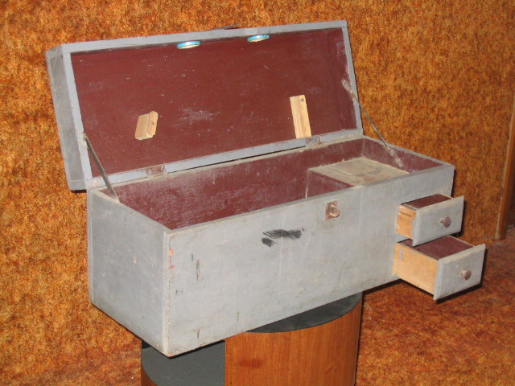
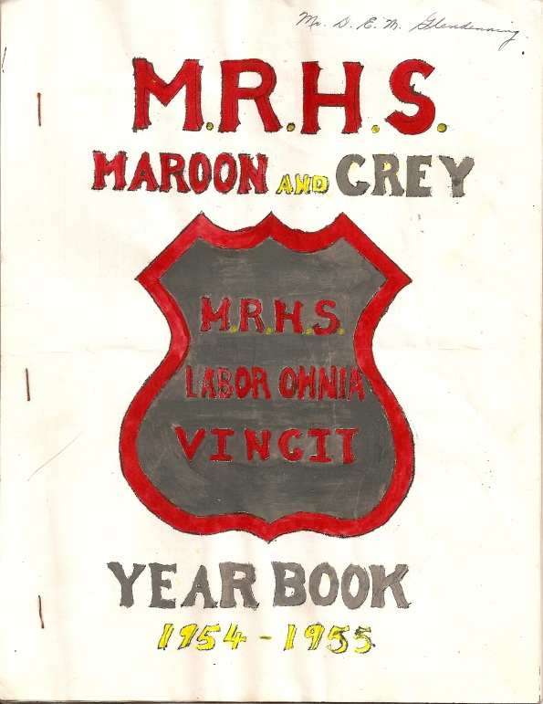

Miramichi Rural High School:
First in its Class
NOTE: A first draft of a brief history of the Miramichi Rural High School.
Early Education
Soon after getting settled in their new community, settler’s thoughts turned to education. The first home-school in Black River was held in a barn belonging to Archibald Cameron, Sr.; the first school in Bay du Vin was operated at the home of James Graham near Buckley’s Bridge in Bay du Vin. The task of teaching usually fell to most educated person in the community and classes were usually held in homes. Records show that, at least by 1817, a qualified teacher, Hugh MacDougald, had been hired to provide instruction
In 1825, residents of Black River petitioned successfully for a school which, as I understand it, was erected near the lane now leading to St. Stephen's Church. This school appears to have served all of Black River and as far east as lower Bay du Vin, and included trustees from both communities.
Although a closer examination of records may show otherwise, History of Bay du Vin (1) reports a school at the mouth of the Bay du Vin River by 1830, perhaps the Cameron School and a school in Bay side by 1845, and the Little Branch School around 1855. MacDougall (2) reports that the Little Branch School burned shortly after construction but was soon replaced.
Each District had a one room school handling all grades usually up to Grade 8 or perhaps Grade 9. Very few students in the area went beyond the studies available at their local school. Those who were lucky, attended high school classes in Loggieville or Chatham and boarded with
relatives or friends. At the time it was possible for students, such as my sister Venetia Glendenning and Grace Godfrey, to write Normal school entrance exams and be admitted directly to Normal school after grade 9
Winds of Change
Things began to change generally in rural New Brunswick by the late 1930’s and nowhere was the change more pronounced than in the Black River-Bay du Vin area.
The Rev. Douglas Smith took up his duties at St. John’s Anglican Church, Bay du Vin, in August of 1937 and, recognizing the needs of the area, later that year started classes “in his own study at the Rectory”; the next year he hired a teacher to help him.

A program distributed at the Formal opening of the new school in 1940 states:
“During this time, another had joined forces with Mr. Smith, Fred A. Fowlie of Fowlie’s Mills. Dreams became visions. Visions became reality. An interview was arranged with Educational authorities at Fredericton”. There was a plea put forth for assistance and encouragement to promote a larger school idea for the areas of Black River and Bay du Vin
The officials were found most sympathetic. The delegation came back encouraged and carried the plan to the people. As a result, the six districts of Black River Bridge, Victoria. Little Branch, Bay Side, Bay du Vin River and Bay du Vin Beach decided to consolidate and join forces to establish the first Rural High School of the Province.
A temporary School Board was appointed to carry on the construction. Rev. D. Smith was the chairman, A.M. Cameron, vice–chairman, Harrison T. Smith, treasurer, Ian MacNaughton, secretary, Woodbury Williston, Bertrand Williston and Jack Godfrey as additional members”.
Classes proved so popular that they had to relocate first to the church basement and later to the church hall across the road. Smith also hired two additional teachers, Miss Elizabeth Stevenson and Mrs. Dorothy Claytonburg.
On the opening of classes in September, 1939, still in Bay du vin, numbers had grown to 67 student, a Principal, Mr. A. T. Patstone and teachers, Miss Jean Barnes in Home Economics, and Miss Beryl MacAloney in academic subjects.
Construction
Land for the new school was donated by, and across the road from the home of, Mr. Harrison T. Smith and actual construction commenced on September 19, 1939. An undated but widely circulated paper by Mr. A. T. Patstone, the first principal, states:
“The building was boarded in with clear Princess Pine, tongue and groove sheathing which was purchased for $75.00 per thousand. The back wall towards the bay was double sheathed. Strapping being placed over the first and then boarded in for the second time. We considered this wall vulnerable to the northerlies which would sweep in from across the Bay with no let or hindrance.
Wiring for the electric lights was done as if for 110 volt, hoping for the day when the ‘Hydro’ would arrive beyond Loggieville. A heavy duty Delco lighting plant was installed and proved most efficient with its two banks of batteries, to provide the necessary wattage. The furnace was forced hot air and the fan motor required a good strong system”. Coal was trucked from Kent County.
The program for the formal opening on Tuesday, October 1, 1940, identified the following as features of the school:
Air-conditioned heating
Pressure water system
Green glare-proof Boards
Modern plumbing
Electric lights, Delco Plant
The new school cost, as I recall, $13,000 and opened in January 1940. On a personal note, my first visit to MRHS was late in the fall of 1939 when George Watling and biked down to see it. It was an impressive building for a rural area. As the photo above shows, it was two-story with two classrooms on each level at the front and an auditorium on the second floor at the back. At the back on the lower floor were the principal’s office, boys and girls washrooms and the furnace room.
MRHS had electric lights, a 32 volt system, operated from a bank of glass-encased batteries with a small gasoline engine switching on and off automatically to charge the batteries. It also had a coal-fired furnace. A very tall flagpole stood in the front yard by the driveway. It looked like a ship’s mast and took a team of horses and special rigging to erect.
Classes were relocated to the new building, I believe, in January, 1940
Districts served
Initially, MRHS drew its students from the following six one-room schools:
Little Branch,
Victoria,
Cameron (Middle Black River)
Miramichi (Bayside)
Auburnville
Bay du Vin
Later, the following schools were incorporated into the District:
Bay du Vin Beach
Hardwicke
First Trustees:
Rev. Douglas Smith, Chair
Archibald Cameron
Ian MacNaughton
Bertram Williston
John R. Godfrey
Harrison T. Smith
Woodbury Williston
Logo
The following logos were found among the writer’s mementoes but he is not sure which was the original.


Programs
In the program for the opening of the new school, the aims of the new Miramichi Rural High School were given as:
To provide a satisfactory type of education, designed to meet the demands of the community and which will best fill the requirements of the individual
To foster and implant those habits of co-operation and economic practices necessary for complete living and for the formation and development of character.
To foster agricultural projects and to lend to the rural social activities of the community.
In addition to the usual subjects, offerings included home economics, shop and music; in fact, an orchestra had been formed by the fall of 1940. In the early years, students were expected to plant school gardens. It seems to me that we were paired and each pair had a small plot. Come fall, the vegetables were canned and kept in the closet under the stairs
Educational programs for adults included weaving, adult discussion groups, music and games. Readers are encouraged to read the paper, undated, by A. T. Patstone and included as Appendix 1.
Transportation
Attendance was not limited to Anglicans or to local students. Students from Black River walked or biked to Bay du Vin during good weather and traveled by horse and sled in the winter; others boarded in Bay du Vin during the bad weather. Norman Glendenning recalls transporting students to Bay du Vin by horse and sled and even to Bay Side after the new school was built. During the day, his horse was stabled either at Goymer Williston’s or Harrison Smith’s barn; Norman always carried some hay and oats for the horse while it was stabled and had to tend to the animals during school break.
The first appears to have been provided by Goymer Williston in the back of a 2-3 ton truck with a box on the back
This was followed in the fall of 1940 by the bus shown below which Eddie Godfrey recalls as a one and one-half ton Fargo chassis purchased from the W.S.Loggie Co. The body, I believe, was fabricated by the Fowlie Brothers of Little Branch.

The first school bus serving the
Miramichi Rural High School
(Photo courtesy Myrtle (Dick) Allen
Their second bus, purchased in 1944 at St. John, NB was khaki colour (a wartime colour); the third bus was a 21/2 ton Fargo, blue and white, built in Levis, PQ; their final bus was a 1947 International built in Saint John. The Godfrey Bros. ended their business in 1955 and the remaining buses were sold.
When the Godfrey Bros. purchased their second bus, the one pictured above was sold to Gordon Dick of Upper Napan and used to transport students from Napan and Point aux Carr to school in Chatham. Those communities were not part of the MRHS school district.
Later the contract for school transportation shifted to Tom Adams.

The photo above, from the Glendenning Collection, shows one of the Adams busses stopped at the Little Branch corner.

Adams fleet of school buses courtesy of Della (Adams) O’Neil


Christmas Concert
It was the custom in the school system to hold an evening of music and entertainment just before Christmas and another, a graduation, towards the end of June. The Christmas concert usually included one item from each of the district schools. The following Christmas program is believed to have been presented in 1954 or 1955.
Christmas Program
Min
Welcome Recitation 2
Christmas Carols – Hardwicke 6
Gaelic Folk Dance 2
Dialogue: A slight Misunderstanding
Bay du Vin Beach 7
The Alphabet Song
Recitation – Little Branch 6
Reading – Victoria 4
Recitations – Black River Bridge 5
Christmas Carol – Bay du Vin River
A Merry Christmas Exercise – Miramichi 5
Rhythm Band - 3
Virginia Reel – MRHS 6
Christmas Carols – MRHS 9
Choral Reading – Grade 8 2
Harmonica – Lyman 1
Play 18
National Anthem
The Christmas Story (Undated)
Mary- Leona Macdonald
Joseph- Dougald Fowlie
The Wise Men Lawrence Gibson
Karl Williston
Harry Williston
The Shepherds Blair Cameron
Alfred Williston
Elmer MacDonald
Vance MacNaughton
Arthur Mills
Edward Godfrey
Attendants Donald Gregan
Loren Gregan
Blaine Gregan
Angels (Senior) Mabel MacLean
Hazel Watling
Rita Adams
Angels (Junior) Doris Hansen
Leona Watling
Marie Gardiner
Ruby Fowlie Blanche Mills
Carmel MacDonald Helene Jenkins
Eunice MacKnight Ruth Williston
Laura MacDonald Joan Williston
Betty Macdonald Symone Daigle
Eva Lewis Annie MacRae
Helen Bransfield
The Reader Ila(?) MacLean
Costumes- Roberta MacRae
? Williston
? Chapman
Tickets Harriet Johnston
Edna Noble
Properties Tommy Williston
Blair Johnston
William Gulliver
Robert Williston
Graduation Exercises
The following Christmas program is believed to have been presented in 1954 or 1955.
O Canada – all join in
Salutory - Jean Gregan
Graduation Song – School
Class Prophesy – Doris Fraser
Road to the Isles – by school
Class Will - Claude Kingston
Land of Glad tomorrows – school and choir
Valedictory – Lois Williston
Presentation of Diplomas
Presentation of Certificates and Prizes
Selections by Night School Choir
Guest Speakers -Canon Britton
-Father McMahon
-Rev. Mr. Russell
Auld Lang Sine – all join in
Yearbooks

Copy of 1954-55 Yearbook
in posession of the author
.
Phase-out
The Miramichi Rural High School operated as a unit until 1957 when both Home economics and shop classes were discontinued. A decade later, a decision was taken to discontinue all high school classes at MRHS and for students to take their high school classes in Chatham. During the same period, the surrounding one-room schools were phased out and students were accommodated in portable classrooms adjacent to the MRHS building. A parcel of 8 acres of land adjoining the original site was purchased and, in 1987 and in xxx “an excited group of staff and students moved into their new home”. Shortly after, the original MRHS building was demolished and MRHS CEASED TO EXIST.
Correction – Chronicle 120
Graduates:
Jean Marjorie Gregan
Lois Anne Williston
Claude Raymond Kingston
Doreen Mabel MacRae
Doris Kaye Fraser
Elizabeth Gertrude MacLean
Recollections
Recollections of people associated with MRHS are welcomed with the following having been received to date:
Ken, Norm and I were at the MRHS at the same time. One teacher, perhaps Miss Hetherington, had both Norm and I in her classes. She called Norm “Big Glendenning” and called me “Little Glendenning – Don Glendenning
One trick was to place a paper cup full of water on the top edge of a classroom door. When the door was opened, the cup of water tumbled down, hopefully on someone’s head. Don Glendenning
The boy’s toilet was constructed in such a way that there was a beam across the top of the entry to the section where the stalls were. It was a great place to practice “chinning”. - Don Glendenning
There a large covered bin in the boy’s washroom was used to store potatoes from the school garden - Don Glendenning
Perley Quayle was a fine man and a good teacher but also a person who understood student pranks. He had a Model A Coupe which he parked at the east end of the school. We frequently moved it or turned it around. - Don Glendenning
One morning I missed the bus at the Little Branch corner and had to walk to school – about 3 miles. Of course, I was late. When I stepped into the school, I met Mr. Quayle. I explained what had happened and then quipped “Better late than never” to which he responded ‘Yes, but better never late.” - Don Glendenning
Lowell Williston had a wooden leg. In the fall of 1939, there was an outbreak of scarlet fever. The school health officer was a Dr. Loggie. When checking to see if people had a rash, one sign of scarlet fever, he would look at their backs, arms or legs. He asked Lowell to pull up his pant leg; Dr. Loggie looked at his leg and pronounced him free of scarlet fever. Lowell had a wooden leg. - Attributed
Perley Quayle brought some of his own equipment to the school for our use. One item was a huge lathe for wood turning. It was operated like a treadle sewing machine. He also set up a blacksmithing area in the coal bin and we learned to work – shaping, welding, annealing, tempering, etc.